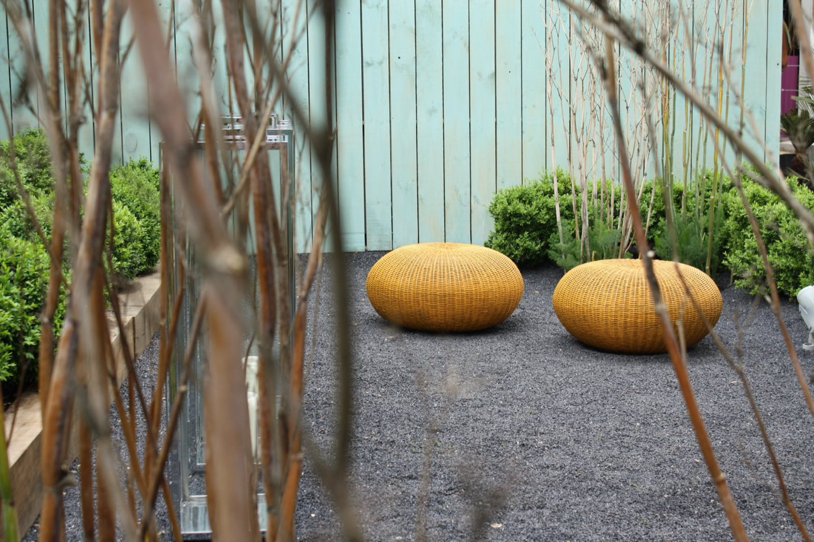
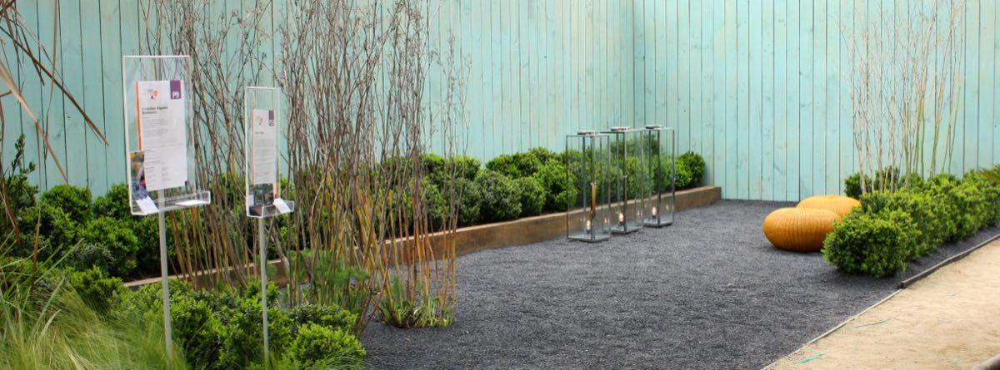
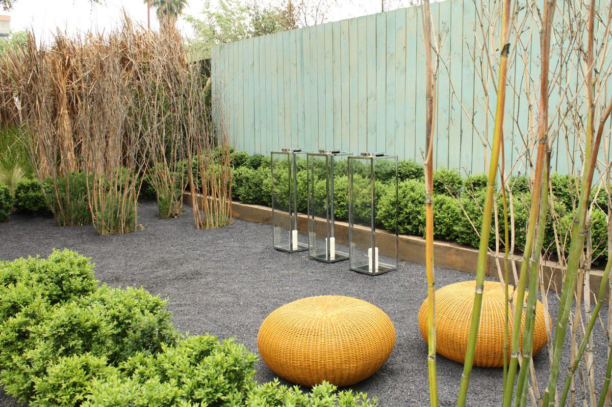
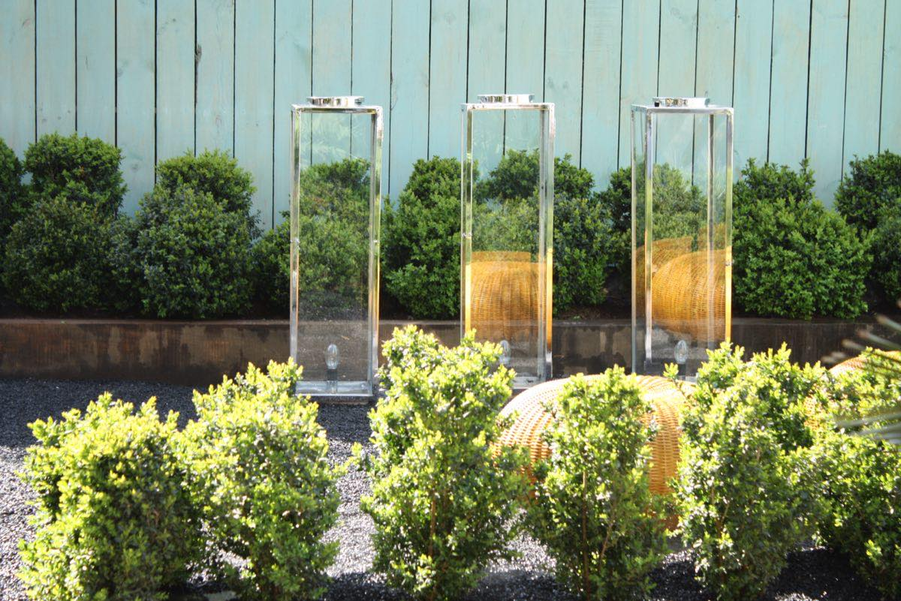
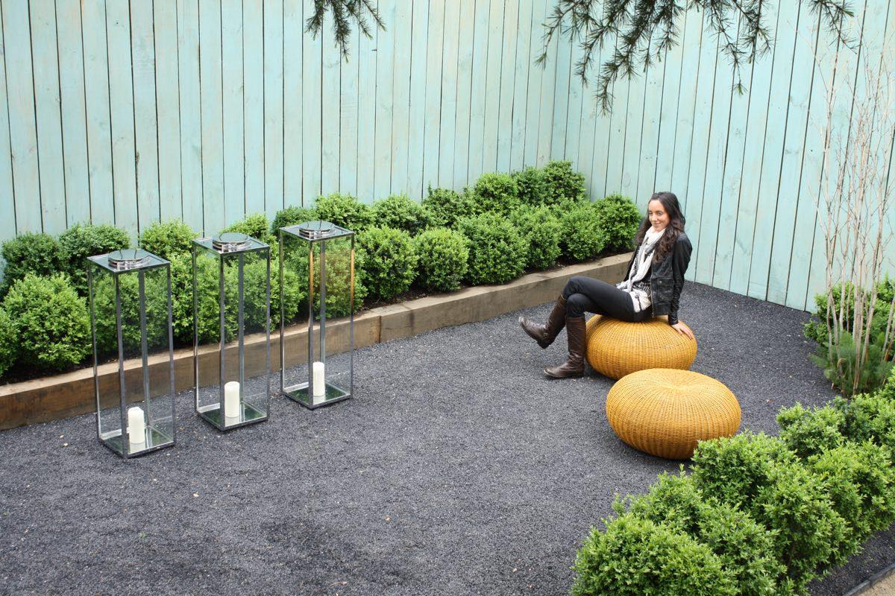
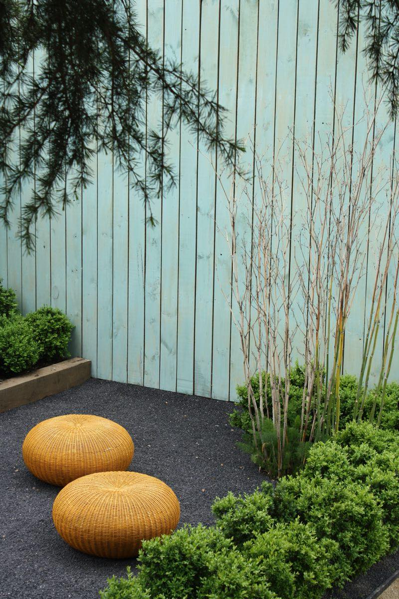
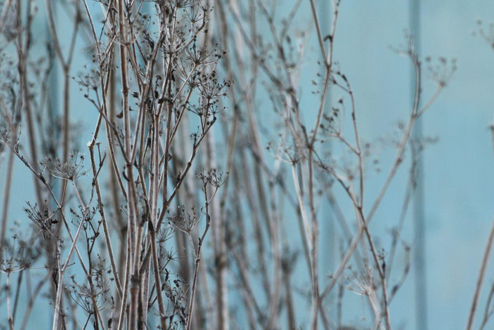
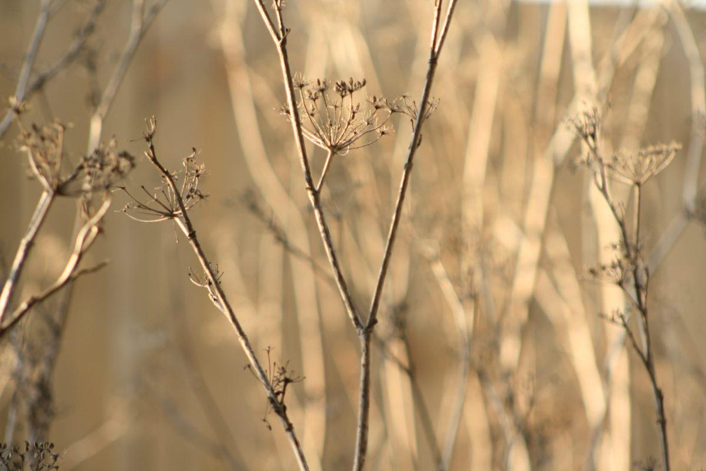
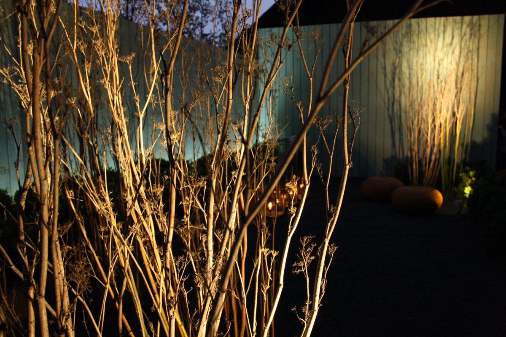
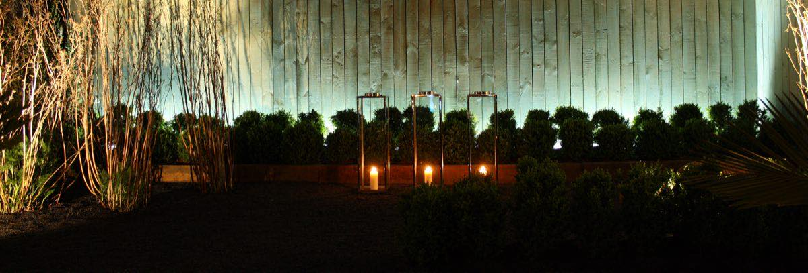

Exposiciones2009
«Simple», Exposición Casa Mater
Espoz, Vitacura · 40 m²
Una invitación a descubrir los detalles de un jardín —sus plantas, sus elementos— y a contemplar lo simple y los espacios vacíos. Una pausa para mirar el detalle de una ramita, la sombra de una planta sobre un muro, la manera en que cambia la luz durante el día. Descubrir lo sublime de la naturaleza en lo más sencillo.









